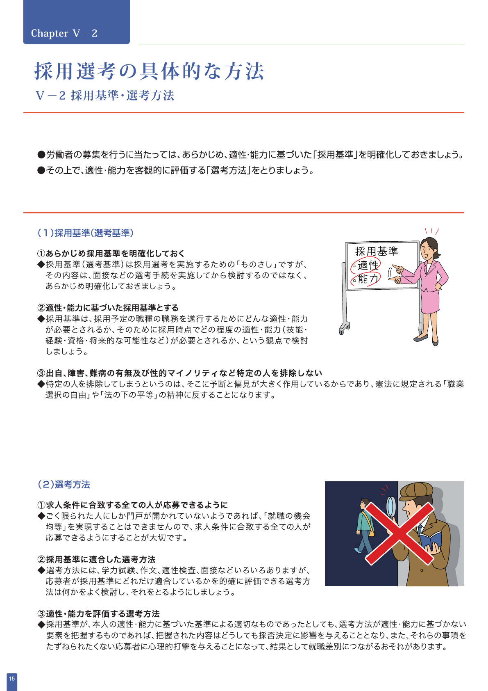

厚労省資料が示す採用の基準

出典：厚生労働省「公正な採用選考をめざして」PDF16ページ・冊子15ページ（2025年4月版、2026年10月6日確認）。
厚生労働省は、採用基準を面接後に考えるのではなく、あらかじめ明確にするよう求めています。基準は職務に必要な適性・能力に基づき、選考方法もそれを客観的に評価できるものにします。同省のFAQは、AIを使う選考でもこの基本は変わらないと明記しています。
求人要件を「評価できる言葉」に変える
「コミュニケーション力が高い」「カルチャーに合う」では、評価者ごとに意味が変わります。まず職務を分解し、入社時点で必要な経験、入社後に学べるもの、確認方法を決めます。生成AIは、求人票や現場ヒアリングから候補を抜き出す補助に使えますが、採用基準の確定は人が行います。
| 曖昧な要件 | 確認可能な表現例 | 確認方法 |
|---|---|---|
| 調整力 | 営業・開発の要望を整理し、合意事項を文書化した経験 | 担当案件と本人の役割を聞く |
| 即戦力 | 法人向けクラウドサービス（SaaS）の新規開拓を一人で進めた経験 | 顧客層、期間、実施範囲を確認 |
| リーダーシップ | 3人以上のチームで優先順位を決めた経験 | 判断場面と結果を確認 |
数字は基準を具体化しますが、根拠なく足してはいけません。「経験3年以上」が本当に職務遂行に必要か、同じ能力を別の経験で示せないかも確認します。
スカウトと書類選考へ、同じ要件台帳から展開する
求人要件、候補者経歴、対応する根拠を一つの表で持ち、候補者検索、スカウト文、書類の下読みで同じ基準を参照します。文面ごとにAIへ基準を考え直させると、ある工程で歓迎条件が必須条件へ変わるなどのずれが起こり得ます。
TechWorkerの設計例：候補者ごとに「要件」「経歴の該当箇所」「不足情報」「人の判断」を記録します。AIに推測で空欄を埋めさせず、情報がなければ面談の確認事項に回します。
スカウト文は、経歴に書かれた実績と募集職務の接点だけを個別化します。「若いから伸びそう」「女性向けの職場」といった属性による訴求は避けます。書類選考では、AIが見つけた一致だけでなく、不一致と不明を分けます。不明は不合格理由ではありません。
送信前には、人が宛先、経歴の事実、求人条件を照合して確定します。求人別に送信数、返信率、返信理由、事実の訂正件数を記録します。返信が増えても、要件の一致や本人の希望を確認するまではマッチング精度が上がったとは扱いません。
推薦コメントは、評価でなく根拠の案内にする
推薦コメントに必要なのは「優秀です」という評価語ではなく、どの要件に、どの経歴が対応するかです。AIには求人要件と職務経歴の該当箇所を引用させ、推測を分離させます。転職理由や希望条件は本人が話した内容だけを使い、AIが筋の通る物語へ補わないようにします。
候補者へ提示する内容と企業へ送る内容は、本人の認識と合っているか確認します。誤った推薦文は選考通過率以前に、候補者と企業の双方の判断をゆがめます。
自動除外を避け、見落としと偏りを検証する
AIのスコアや順位は、候補を読む順番の参考にはなります。一定点未満を自動で不合格にすると、曖昧な要件や入力不足がそのまま排除へ変わります。特に初期運用では、人が全件または無作為抽出を再確認し、AIが低く評価した候補者に妥当な人が含まれていないかを調べます。
検証では、推薦後の書類通過だけでなく、面談で判明した要件不一致、AIの見落とし、確認に要した時間を求人別に記録します。属性別の差を確認する場合も、差が生じた理由を採用基準と入力データまで戻って調べます。精度向上を先に宣言せず、運用データで判断します。
よくある質問
避けてください。AIの順位は下読みの補助として扱い、採用基準との対応、見落とし、属性による偏りを人が確認します。厚生労働省は、AIを含む方法でも適性・能力に基づく公正な採用選考を求めています。
職務経歴に記載された業務、スキル、実績と求人要件の対応を根拠にできます。年齢、性別、国籍など職務と関係しない属性を訴求や優先順位の根拠にしません。送信前に経歴の取り違えを確認します。
AIのスコアだけでは測れません。推薦後の書類通過、面談で判明した要件不一致、企業と候補者の双方から得た理由を記録し、求人・職種ごとに確認します。